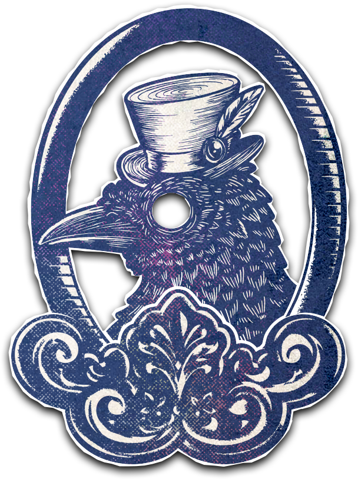
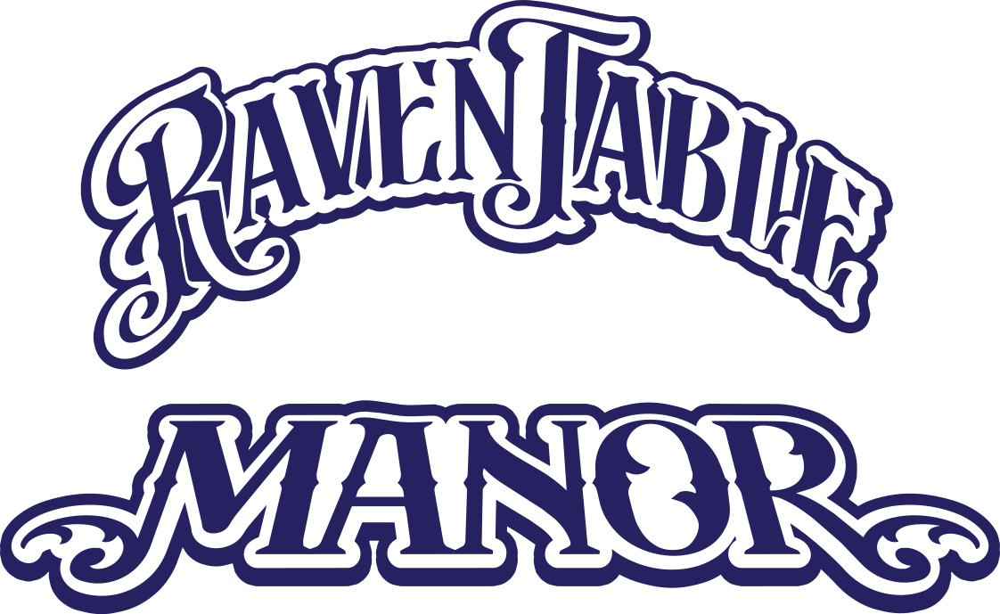

THE
UnKindness Katholikon
HELP WANTED at RavenTable Manor.
To be successful here, you must always remember to keep things tidy, follow everything I tell you, and at all times, remain Civil. If you are interested in inquiring about open positions, click here.— Ms. Bella Beeton

The fork was introduced to Italy in 1004 A.D. by Byzantine noblewoman Maria Argyropoulina.
When she died of the plague, a cardinal blamed it on not using the forks the almighty gave her.
Ancient Romans used two spoons: the ligula for soft foods and the cochleare for eggs and shellfish.
King Louis XIV made rounded dinner knives law across France to reduce brawls and murders.